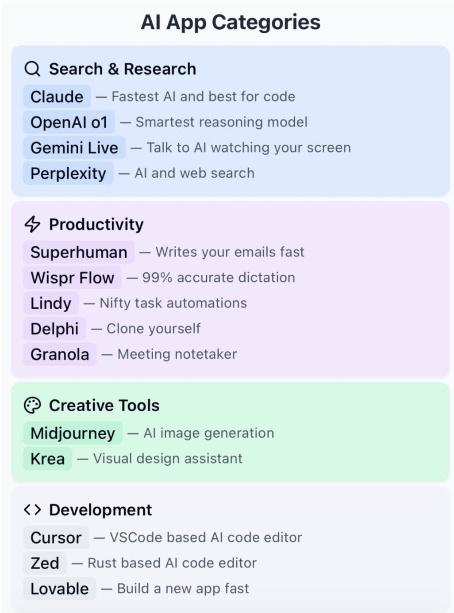

Software Engineering in an AI World
Developing with Coding Assistants as Co-Intelligences
Jake Mannix
CS 480
Winter 2025
About Your Instructor
Jake Mannix
- 25+ years in software engineering
- Currently: Technical Fellow for AI & Relevance at Walmart Global Tech
- Previously: LinkedIn, Salesforce, Twitter, Allen Institute for AI, startups
- Focus area: AI Infrastructure, Search, RecSys
- College email: jmannix@collegeofidaho.edu
- Personal email: jake.mannix@gmail.com
Course Overview
- Intensive 4-week project-based course
- Focus on practical AI collaboration skills
- Real-world project development
- Weekly research and reflection assignments
- Emphasis on both capabilities and limitations
Detailed Syllabus
Why AI in Software Engineering?
- Transformative moment in our industry
- New tools require new skills
- Opportunity to shape the future of development
- Critical to understand both potential and limitations
The Current Landscape
AI is revolutionizing software development
- 95% of developers use AI today
- 40-60% productivity gains reported (e.g. here)
- Dramatic reduction in routine coding tasks
- Shift in developer workflow paradigms: designing, architecting, guiding, but less boilerplate
- OpenAI's o3 model: 2727 on Codeforces (only beat by 175 humans, anywhere)
The AI Developer Ecosystem
- Three major categories of tools:
- IDE Integration & Coding Assistants
- Large Language Models for Code
- Autonomous Coding Agents
Key Players in AI Development
IDE / Coding Assistants
- GitHub Copilot
- Amazon Q
- Cursor.sh
- Codium Windsurf
- Tabnine
- Aider
- Continue.dev
- Sourcegraph Cody
Capable Code LLMs
- Anthropic Claude 3.5 Sonnet (my favorite)
- OpenAI o1 (better at multistep reasoning)
- OpenAI GPT-4o, Gemini Pro (almost as good)
- Deepseek v3 (open source out of China)
- lots more open ones on the Huggingface leaderboard
Coding Agents
- AI systems that can autonomously plan and execute complex coding tasks
- High-level requirements => steps
- Able to use tools like:
- Package managers, shell, git, build system, web browser
- Examples: Devin, Openhands, AutoGPT
- Still emerging technology - requires validation
Tools where AI is used

From Theory to Practice
- Let's see these tools in action
- Real-world development scenario
- Interactive demonstration
- Focus on practical workflow
Live Demo: AI-Assisted Development
Building a Scalable Disjunction Query System
- Complex data structure implementation
- Performance optimization
- Test suite development
Demo Goals
- Effective prompt engineering
- Iterative development with AI
- Code validation strategies
- Performance testing
Putting It All Together
- Moving from demos to real projects
- Applying what we've learned
- Building something meaningful
- Learning through doing
Course Projects
- Self-directed projects in new technical territories
- Regular check-ins and milestone reviews
- Focus on learning through AI collaboration
- Documentation of successes and failures
Example Project Ideas
- Social Webapp
(on ATProto that Bluesky uses? or encrypted/private?)
- iOS game
(potentially with server-side multiplayer stuff?)
- Open Source Duolingo competitor
- AI-powered todo-list helper
- Fine-tuned LLM for RPG NPCs
- ???
Weekly Deliverables
- Research summary on AI in software development
- News reports, papers, blog posts
- Critical analysis of claims
- Economic and ethical implications
- Project progress report
- AI collaboration successes
- Challenges and workarounds
- Lessons learned
Questions?
Let's discuss your project ideas and get started!